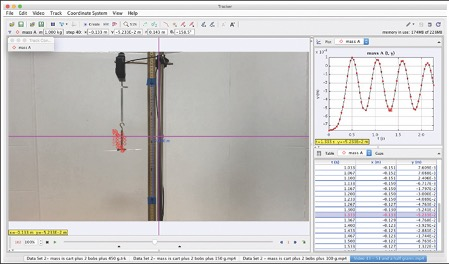

These University of Cincinnati physics laboratory activities demonstrate how Tracker, together with prerecorded videos, can be used to deliver an authentic online physics laboratory experience that maintains the rigor and essential features of in-person labs. The Force and Motion and the Harmonic Motion activities are organized around a central research question that explicitly targets causal and hypothetical reasoning embedded in cycles of inquiry, reflection, evaluation, and communication of outcomes.
The materials in this Tracker Collection were used with over 2,000 students at the University of Cincinnati introductory physics course during the 2020 fall semester. For additional information see The Physics Teacher paper titled "Maintaining Essential Course Features When Moving Introductory Physics Labs Online" by Kathleen Koenig and Sarah Baker for a detailed description of this online course.
https://doi.org/10.1119/5.0039606
This Tracker Collection is maintained by Wolfgang Christian. You can contact me at wochristian@davidson.edu.